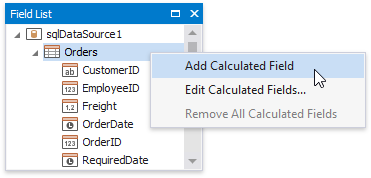
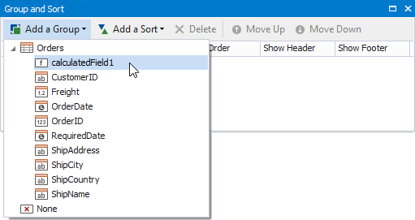
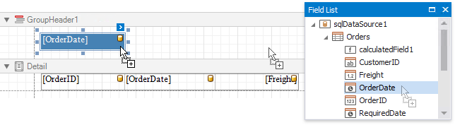
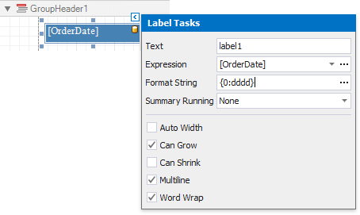

Group Data by a Custom Field
This tutorial illustrates how to group a report against a custom criteria, in particular, group data by days of the week.
Create a new or open an existing data-bound report.
You cannot apply grouping unless your report is bound to a data source.
Create a calculated field. Switch to the Field List, right-click any item inside the data source and select Add Calculated Field.

Select the calculated field, and in the Property Grid, click the Expression property's ellipsis button.

In the invoked Expression Editor, select the required date-time function and define the data field's name in [square brackets]. For example, use the GetDayOfWeek([OrderDate]) function to return a zero-based index of the day of the week, extracted from the OrderDate data field.

Click OK to close the editor and save the changes.
Use the Group and Sort panel to quickly create a Group Header band associated with the calculated field.
To create a group criteria, click Add a Group and select the calculated field from the invoked drop-down menu.

You can also use this panel to specify whether or not the corresponding Group Footer band should be visible. The Sort Order drop-down list allows you to define the sort order within the group (ascending or descending) or disable sorting in grouped data.
Switch to the Field List and drop the required data fields onto the report's area.

Click the smart tag of the label in the Group Header and set the Format String property to {0:dddd}. This makes the label only display the day of the week, and not the date.

Switch to Print Preview to see the result.